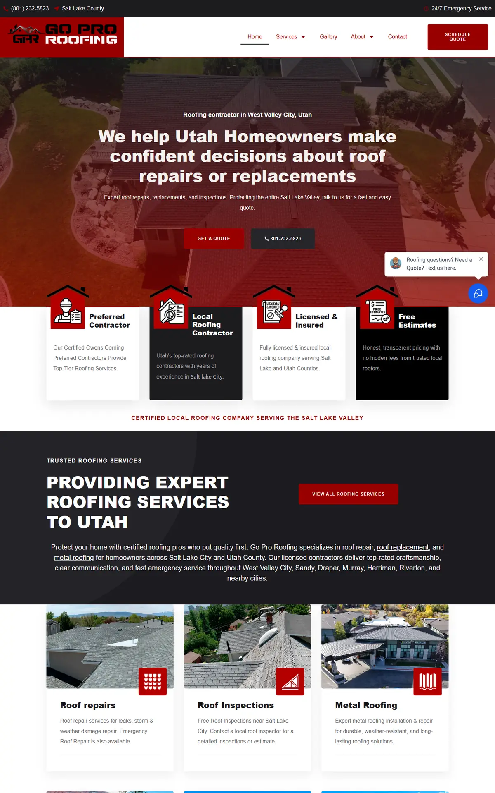
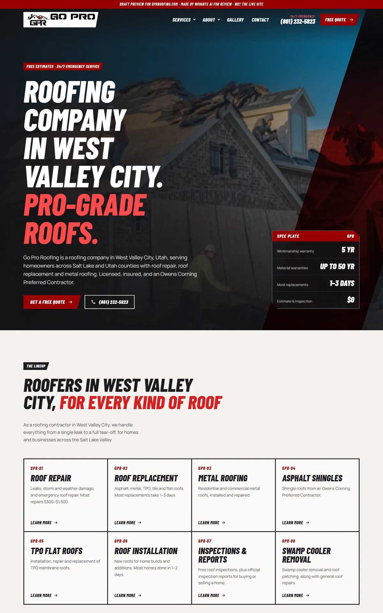
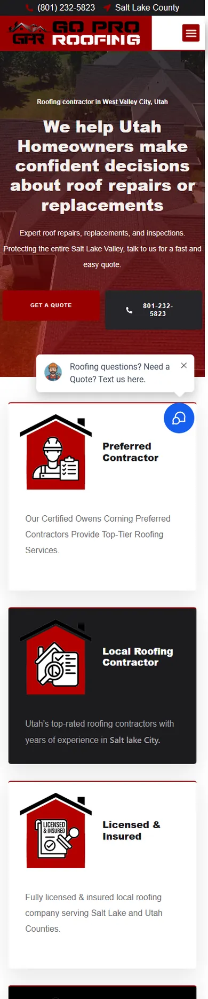
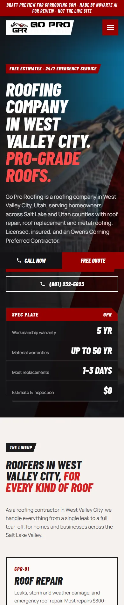

Start with the report to see what was wrong, then what we fixed, then the before-and-after. When you're ready, open the new website. Nothing here is live.
The website plan report from the 5 Oct 2026 audit. It's the reason behind most of the changes below.
Go Pro Roofing · West Valley City · Prepared 17 Oct 2026. Business facts and audit from 5 Oct 2026; search numbers and Google results from 14 Oct 2026. Draft for Angelo's review.
roofing company west valley city (40 for “roofing company”, 70 for “roofing company near me”).From the Google profile on 5 Oct 2026. Confirm with the client before it goes on the site. The phone is copied exactly as given (+1801-232-5823). Ask the client how they want it shown; do not reformat it without their OK.
roofing company west valley cityroofers west valley city, roofing contractor west valley cityThe home page should link to every service page and the cost page. Show the rating and review count once the client confirms them.
| # | Service | Target keyword | Searches | "Near me" | Exact keyword | Status |
|---|---|---|---|---|---|---|
| 1 | Roof repair | roof repair west valley city | 50 | 20 | – | Has a page |
| 2 | Metal roofing | metal roofing west valley city | 40 | 10 | – | Has a page |
| 3 | Roof replacement | roof replacement west valley city | 10 | 20 | – | Has a page |
| 4 | Roof installation | roof installation west valley city | 10 | 20 | – | Has a page |
| 5 | Emergency roof repair | emergency roof repair west valley city | 10 | 10 | – | Home page only |
| 6 | Roof inspection | roof inspection west valley city | 10 | 10 | – | Home page only |
| 7 | Commercial roofing | commercial roofing west valley city | 10 | 10 | – | Has a page |
| 8 | Metal roofing contractors | metal roofing contractors west valley city | 10 | 10 | – | Has a page |
| 9 | Asphalt shingle roofing | asphalt shingle roofing west valley city | 10 | – | – | Has a page |
| 10 | Residential roof installation | residential roof installation west valley city | 10 | – | – | Has a page |
Searches and "near me" are inside West Valley City. "Exact keyword" = searches for the keyword with the city name, across Utah (for services read from their site: inside West Valley City). "–" = fewer than 10 a month; "10" is Google's lowest number. One page per service. Only build a page if the business really does that service.
| Search | Use? | Where |
|---|---|---|
| Residential roof repair west valley city | Yes | Matching service page, as a section |
| Free roof repair west valley city | If true | Only with real offers from the client |
| Free roof replacement west valley city | If true | Only with real offers from the client |
| Roof replacement west valley city cost | Real prices only | Cost page |
| Roof replacement cost west valley city calculator | Real prices only | Cost page |
| Metal roof replacement cost west valley city | Real prices only | Cost page |
| roof repair near salt lake city | Other city | Only if they work in Salt Lake City (city page) |
| ut | Yes | Matching service page, as a section |
| roof repair near west valley city | Yes | Matching service page, as a section |
| ut | Yes | Matching service page, as a section |
| Metal roof repair near me | Yes | Matching service page, as a section |
| Best roof repair near me | Show, don't claim | Use real reviews, photos and process. Don't claim "the best". |
Sorted automatically. Check any "company name" row by eye before skipping it.
| Keyword | Searches West Valley City | All Utah | City version | All Utah |
|---|---|---|---|---|
| roof replacement cost | 10 | 170 | roof replacement cost west valley city | – |
| roof repair cost | 10 | 30 | roof repair cost west valley city | – |
| new roof cost | 10 | 70 | new roof cost west valley city | – |
| metal roof cost | 10 | 90 | metal roof cost west valley city | – |
One cost page covering all of these. Cost searchers are close to buying. Use only real prices from the client. If the client will not share prices, explain what changes the price and invite a free estimate instead.
| City | Keyword 1 | All Utah | Keyword 2 | All Utah |
|---|---|---|---|---|
| Salt Lake City | roof repair salt lake city | 140 | roof replacement salt lake city | 20 |
| South Jordan | roof repair south jordan | 30 | roof replacement south jordan | – |
| Sandy | roof repair sandy | 30 | roof replacement sandy | – |
| Draper | roof repair draper | 10 | roof replacement draper | – |
Build a city page only if the business really works there. Salt Lake City has the most searches (140 for "roof repair salt lake city" across Utah). Each page needs real local content (jobs done there, neighborhoods), not the West Valley City page with the name swapped.
| Keyword | Avg. words (top pages) | Have FAQ | Show prices |
|---|---|---|---|
| roof repair west valley city | ~590 | 2 of 3 | 0 of 3 |
| roof replacement west valley city | ~1,163 | 3 of 3 | 0 of 3 |
| roof replacement cost west valley city | ~1,862 | 2 of 3 | 2 of 3 |
Use competitor headings for topic ideas only. Do not copy them. Some name other companies, owners or promotions. Bios, promotions and project photos go in only with real facts from the client.
| Question | Use? | Where |
|---|---|---|
| How do you do valleys with metal roofing? | Yes | Matching service page |
| How to pay for roof repair? | If client confirms | Only what the client really offers |
| Who are the major manufacturers of shingles in the USA? | Skip as written | Cover the intent on the home page (reviews, why choose us) |
| How long do roofs last in Utah? | Yes | Matching service page |
| How to get your roof replaced for cheap? | Real prices only | Cost page |
| What is the average cost to replace a roof on a 2000 square-foot home? | Real prices only | Cost page |
| What is the 25% rule for roofing? | Check Utah rules | Matching service page |
| Is $30,000 too much for a roof? | Real prices only | Cost page |
| Will insurance cover a 20 year old roof? | If client confirms | Only what the client really offers |
| What is the average price of a roof repair? | Real prices only | Cost page |
| How much should I pay for a roof repair? | Real prices only | Cost page |
| Who is the best person to fix a leaking roof? | Yes | Matching service page |
Search numbers: Google Ads monthly searches, pulled 14 Oct 2026. Questions and page topics: live Google results in West Valley City, 14 Oct 2026.
roofing company west valley city.Each problem from the report or the site review, and what the new site does about it.
| Problem | What we did | Status |
|---|---|---|
| First draft looked templated and plain | Redesigned in a pro tool-brand style: heavy italic condensed type, red diagonal slashes, a spec-plate hero, the services as a catalog lineup, an interactive pick-the-right-roof selector and a job-site photo wall cropped to hide the watermarks | Fixed |
| Mobile speed 26/100; the logo alone is a 40,974 x 7,261 px PNG (1.7 MB) | Logo scaled to 600 px; plain HTML, no Elementor, WebP images under 150 KB, lazy-loaded | Fixed, re-test after go-live |
| 29 of 30 pages have no meta description | Hand-written for home, service pages, blog, gallery, reviews; others from each page's own text | Fixed |
| West Valley City missing from most titles and H1s | Home and 8 main pages now have West Valley City in the title, H1 and first paragraph | Fixed |
| Roof repair page's H1 says "Roof Replacement Experts" | H1 is now "Roof Repair in West Valley City" | Fixed |
| 87 images look like stock or AI photos | Only real job photos, crew photos and badges kept | Fixed, ask for more photos |
| Category pages have no canonical tag | Self-canonical added to all 4 | Fixed |
| Broken links: a typo URL and a 404 blog link | Typo pointed to the right page; 404 link removed | Fixed |
| Privacy policy and terms pages are empty | Marked noindex with a placeholder | Needs client |
| Two posts answer the same question (who to call for a roof leak) | Both kept on their URLs; merge needs a redirect | Needs Angelo |
| Badges say "GAF Master Elite"; text says "GAF recognized/authorized" | Text kept as written; badges shown as on the site | Needs client |
| Prices and timing claims only in FAQs | Their FAQ ranges shown in the roof chooser and service intros | Needs client |
| No schema beyond basics | RoofingContractor, Service, FAQPage, BlogPosting, BreadcrumbList | Fixed |
The home page, old site on the left and the new design on the right. Screenshots from 16 to 17 Oct 2026.




Jump straight into key pages of the new site. Use the browser back button to come back here.
These need answers before the site goes live. Full details are in the notes file in OUTBOX.